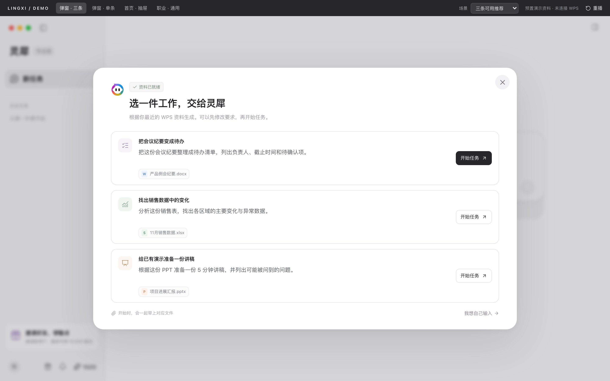
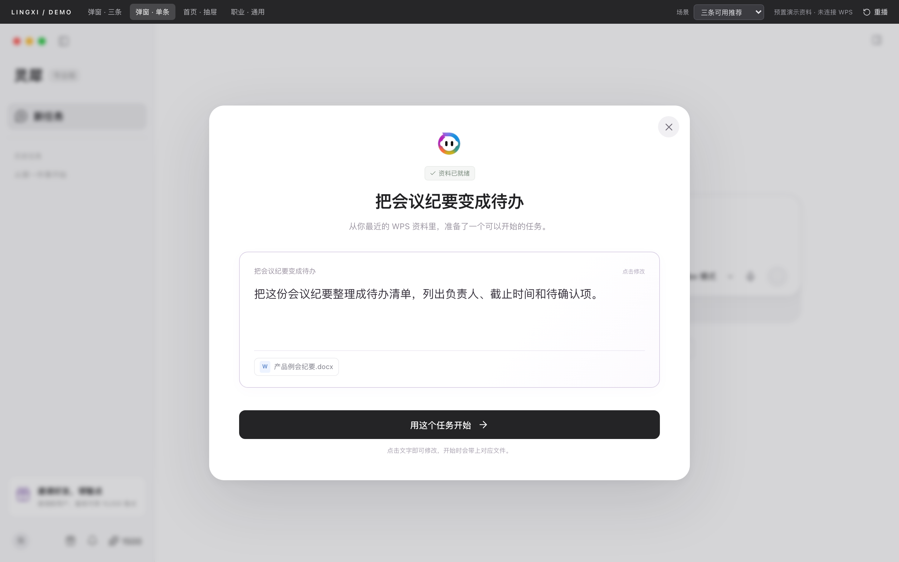
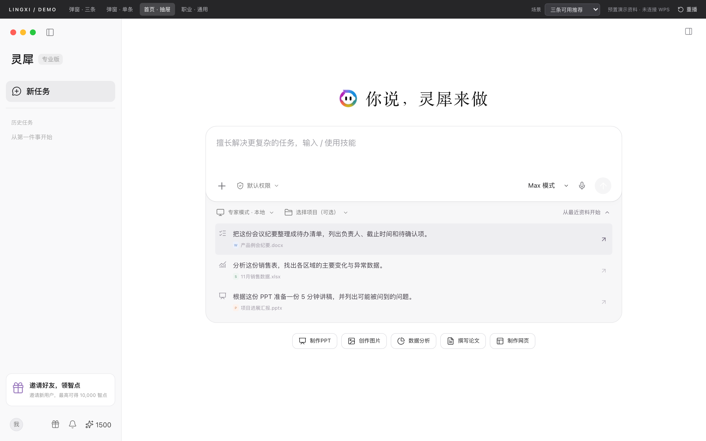
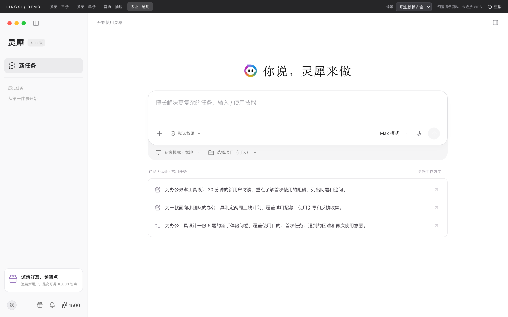
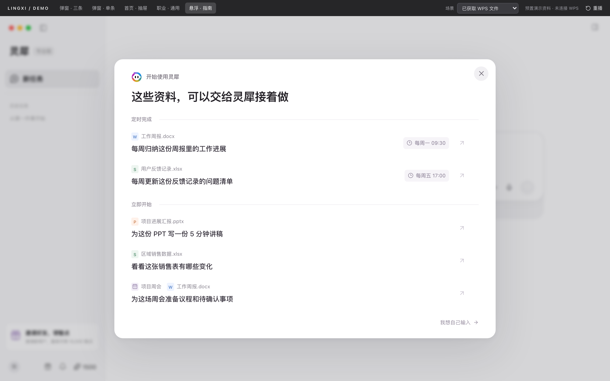

LINGXI · ONBOARDING EXPLORATIONS
五种开始方式，分别体验
同一套灵犀界面，比较推荐的位置、数量，以及推荐依据。
交互 Demo · 2026.11.25
新增方案 05 · 大弹窗与悬浮新手指南
新增方案 05 · 大弹窗与悬浮新手指南

01 / THREE TASKS弹窗 · 三条推荐
开始体验 ↗价值引导 → 获取资料 → 三条建议 → 直接执行
最多三条，按实际数量呈现；无法生成时使用示例任务。

02 / ONE TASK弹窗 · 单条推荐
开始体验 ↗价值引导 → 获取资料 → 一条建议 → 直接执行
一个编辑区，一个「用这个任务开始」按钮。

03 / HOME DRAWER首页 · 抽屉推荐
开始体验 ↗价值引导 → 获取文件 → 首页自动展开 → 开始任务
完整引导后自动展开；紧凑三行，无独立任务大卡片。

04 / ROLE BASED职业 · 通用推荐
开始体验 ↗选择工作方向 → 常见任务 → 修改 / 选择 → 直接执行
按职业预设三条常见任务，不读取文件、不附带附件。

05 / FLOATING GUIDE大弹窗 · 悬浮新手指南
开始体验 ↗价值引导 → 获取具体资料 → 对应任务 → 会话与左下角指南
围绕已获取的文件与日程推荐常见做法；点击带资料开始，指南缩到左下角。